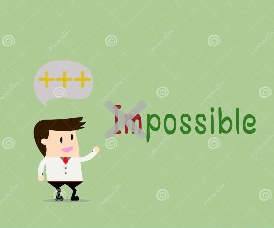

How to stay positive always ?

- Improved Mental Health:Positive thinking can reduce stress, anxiety, and depression. When you focus on the good,
it can help shift your perspective, making you more resilient in the face of challenges.
- Better Physical Health: Studies suggest that optimism and positive thinking are linked to better physical health outcomes,
including improved heart health, stronger immune system, and a lower risk of chronic diseases.
- Increased Resilience: Positivity helps you bounce back from setbacks more effectively. A positive mindset allows you to approach
problems with a solution-oriented attitude, rather than feeling overwhelmed.
- Enhanced Relationships: Positive people tend to attract other positive people, which can lead to healthier, more supportive relationships.
A positive attitude can improve communication and reduce conflict.
- Greater Success: Optimism is often associated with greater motivation and persistence. When you're positive,
you're more likely to take on challenges and keep working toward your goals, which can lead to greater success.
- Boosted Energy and Productivity: A positive mindset can increase your energy levels and help you stay motivated,
which leads to higher productivity in both personal and professional settings.
- Better Sleep: Positive thinking can lead to reduced stress and anxiety, which in turn can help you relax and sleep
better at night.
- Increased Self-Esteem: Maintaining a positive outlook on life often leads to better self-image and higher self-esteem,
as you focus on your strengths and achievements rather than dwelling on shortcomings.